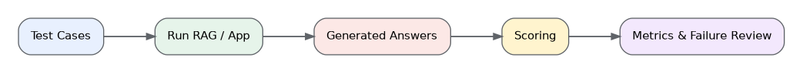

Measure application quality with a repeatable test dataset.
Fast Memory Flow

What I Built
I created a small repeatable evaluation dataset and a baseline keyword scorer. I separated the idea of retrieval quality from answer quality and identified groundedness, correctness, relevance, and output format as production metrics.
Think Summary
Why is keyword scoring only a baseline?
A keyword may appear in an incorrect or unsupported answer.
A correct paraphrase may not contain the exact expected word.
Production evaluation should measure retrieval, groundedness, correctness, relevance, and format separately.
Interview Q&A
What should be evaluated in a RAG system?
Evaluate retrieval quality and generated-answer quality separately.
What is groundedness?
Groundedness measures whether the answer is supported by the retrieved evidence.
Why keep a fixed test dataset?
A fixed dataset makes prompt, model, and retrieval changes comparable and repeatable.
30-Second Interview Answer
I created a small repeatable evaluation dataset and a baseline keyword scorer. I separated the idea of retrieval quality from answer quality and identified groundedness, correctness, relevance, and output format as production metrics.
One-Line Résumé Description
Created a repeatable evaluation dataset and baseline quality checks for a RAG support assistant.
Read-Aloud Practice
What I built
I created a small repeatable evaluation dataset and a baseline keyword scorer. I separated the idea of retrieval quality from answer quality and identified groundedness, correctness, relevance, and output format as production metrics.
What should be evaluated in a RAG system?
Evaluate retrieval quality and generated-answer quality separately.
What is groundedness?
Groundedness measures whether the answer is supported by the retrieved evidence.
Why keep a fixed test dataset?
A fixed dataset makes prompt, model, and retrieval changes comparable and repeatable.
Résumé description
Created a repeatable evaluation dataset and baseline quality checks for a RAG support assistant.